배우기 전에 먼저 해 보세요. 틀려도 괜찮아요.
Aushilfe gesucht는 무슨 뜻일까요?
gesucht는 '구함'이라는 뜻이에요.
Ich habe vor, in Deutschland zu studieren.은 무슨 뜻일까요?
vorhaben은 계획을 말해요.
A2.2 Mittendrin · Lektion 2
일과 직업
음성은 준비 중이에요. 듣기 단추와 받아쓰기는 음성이 올라오면 쓸 수 있어요. 그동안은 글을 읽으면서 공부해요.
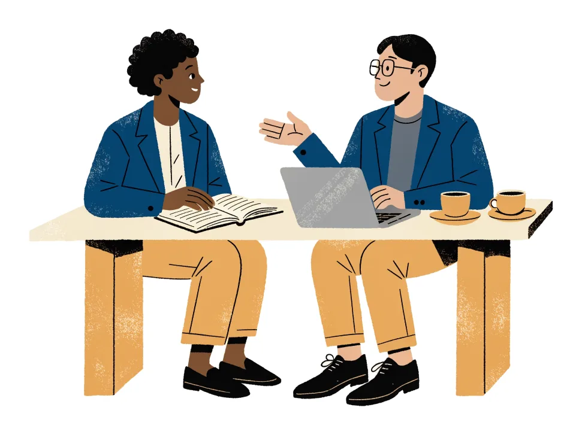
독일에서 일하거나 일자리를 구하려면 내가 하는 일과 해 온 일을 설명할 수 있어야 해요. 구인 광고를 읽고, 지원하고, 앞으로의 계획도 말해야 해요. 이 과에서는 앞으로의 일을 말하는 werden과, 계획을 말할 때 쓰는 zu를 배워요.
문법 werden, Infinitiv mit zu (Ich habe vor, … zu …)
과제대학아르바이트(Nebenjob) 광고를 보고 지원하기
과제직장이력서를 쓰고 하는 일 소개하기
이 과를 마치면 하는 일과 경력을 설명하고, 구인 광고를 이해하고, 앞으로의 계획을 말할 수 있어요.
이 과에서 쓸 말이에요.
배우기 전에 먼저 해 보세요. 틀려도 괜찮아요.
Aushilfe gesucht는 무슨 뜻일까요?
gesucht는 '구함'이라는 뜻이에요.
Ich habe vor, in Deutschland zu studieren.은 무슨 뜻일까요?
vorhaben은 계획을 말해요.
Lektion 1의 낱말 다섯 개를 다시 떠올려 보세요.
2월의 오후, WG 거실이에요. Jiu는 4월에 대학 공부를 시작해요. 휴대폰으로 아르바이트 광고를 보고 있어요.
들으면서 찾아보세요. Jiu는 언제 지원 메일을 보내나요?
화요일 오전, 회의실이에요. Frau Hoffmann이 한 해에 한 번 팀원과 따로 하는 면담을 Dohyun과 해요.
들으면서 찾아보세요. Dohyun은 3월부터 무엇을 하나요?
수업이 끝난 뒤 어학원 교실이에요. Sora가 Frau Becker에게 궁금한 것을 물어요.
들으면서 찾아보세요. Sora는 앞으로 무엇을 할 계획인가요?
세 대화를 듣고 답하세요.
카페는 언제부터 일할 사람을 찾나요?
카페에서 하는 일이 아닌 것은 무엇인가요?
Für die Stelle im Café braucht man Erfahrung.
경험은 없어도 된다고 쓰여 있어요.
Dohyun은 지금 무엇을 맡고 있나요?
Dohyun muss die Weiterbildung selbst bezahlen.
회사가 낼 거라고 했어요.
Dohyun은 3월부터 무엇을 하나요?
Ausbildung을 하는 사람은 어디에서 배우나요?
Sora hat vor, wieder als Designerin zu arbeiten.
낱말 48개예요. 명사는 der, die, das를 색으로 구분했어요.
der Job, die Jobs 일, 일자리
Ich suche einen Job.저는 일자리를 찾아요.
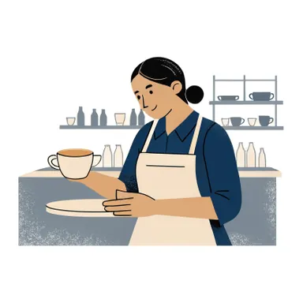
der Nebenjob, die Nebenjobs 아르바이트, 부업
Jiu sucht einen Nebenjob.Jiu는 아르바이트를 찾아요.
die Aufgabe, die Aufgaben 맡은 일, 과제
Was sind Ihre Aufgaben?맡은 일이 뭐예요?
zuständig 맡고 있는, 담당하는
Ich bin für die Kunden zuständig.저는 고객을 맡고 있어요.
das Projekt, die Projekte 프로젝트
Ich plane die Projekte.저는 프로젝트를 계획해요.
die Abteilung, die Abteilungen 부서
Ich arbeite in der Abteilung Technik.저는 기술 부서에서 일해요.
der Chef, die Chefs 상사 (남자)
Mein Chef ist nett.제 상사는 친절해요.
die Chefin, die Chefinnen 상사 (여자)
Meine Chefin heißt Frau Hoffmann.제 상사는 Frau Hoffmann이에요.
der Mitarbeiter, die Mitarbeiter 직원
Die Firma hat fünfzig Mitarbeiter.그 회사는 직원이 쉰 명이에요.
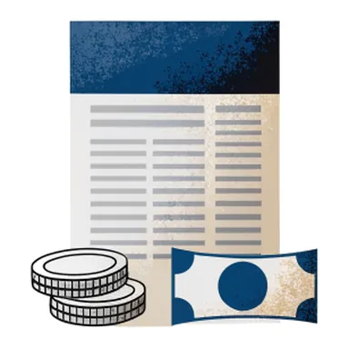
das Gehalt, die Gehälter 급여
Das Gehalt kommt am Ende vom Monat.급여는 월말에 들어와요.
verdienen (hat verdient) (돈을) 벌다
Ich verdiene fünfzehn Euro pro Stunde.저는 한 시간에 15유로를 벌어요.
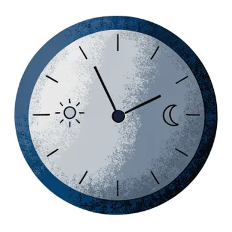
die Schicht, die Schichten 교대 근무
Meine Schicht beginnt um sechs.제 근무는 6시에 시작해요.
Vollzeit 전일제
Ich arbeite Vollzeit.저는 전일제로 일해요.
Teilzeit 시간제
Sora möchte Teilzeit arbeiten.Sora는 시간제로 일하고 싶어 해요.
leiten (hat geleitet) 이끌다
Ich möchte ein Team leiten.저는 팀을 이끌고 싶어요.
übernehmen (du übernimmst, hat übernommen) 맡다, 넘겨받다
Ich übernehme das Projekt.그 프로젝트는 제가 맡을게요.
bezahlen (hat bezahlt) 돈을 내다
Die Firma bezahlt den Kurs.과정 비용은 회사가 내요.
pro ~마다, ~당
Ich arbeite zehn Stunden pro Woche.저는 일주일에 10시간 일해요.
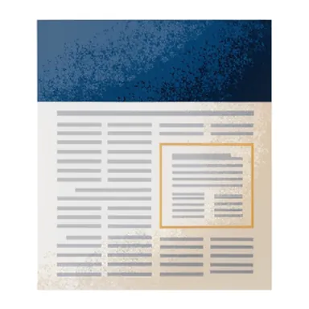
die Stellenanzeige, die Stellenanzeigen 구인 광고
Ich habe eine Stellenanzeige gelesen.구인 광고를 하나 읽었어요.
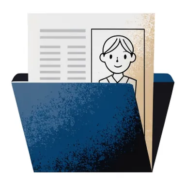
die Bewerbung, die Bewerbungen 지원, 지원서
Ich schreibe heute die Bewerbung.오늘 지원서를 써요.
sich bewerben (du bewirbst dich, hat sich beworben) 지원하다
Ich möchte mich bewerben.지원하고 싶어요.
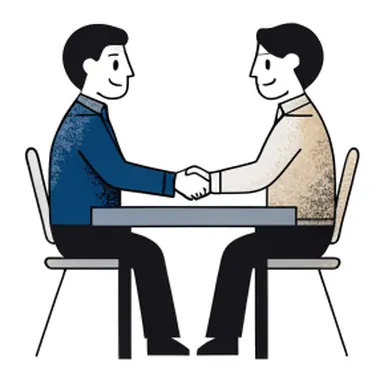
das Vorstellungsgespräch, die Vorstellungsgespräche 면접
Ich habe morgen ein Vorstellungsgespräch.내일 면접이 있어요.
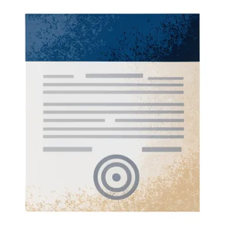
das Zeugnis, die Zeugnisse 증명서, 성적표
Ich schicke meine Zeugnisse mit.증명서를 함께 보내요.
die Erfahrung, die Erfahrungen 경험, 경력
Ich habe keine Erfahrung.저는 경험이 없어요.
die Aushilfe, die Aushilfen 잠깐 일하는 사람
Das Café sucht eine Aushilfe.카페에서 일할 사람을 찾아요.
bedienen (hat bedient) (손님을) 응대하다
Ich bediene die Gäste.저는 손님을 응대해요.
gesucht 구함
Aushilfe gesucht!일할 사람 구함!
nötig 필요한
Erfahrung ist nicht nötig.경험은 없어도 돼요.
freundlich 친절한
Die Kollegen sind freundlich.동료들이 친절해요.
zuverlässig 믿을 수 있는
Jiu ist zuverlässig.Jiu는 믿을 수 있는 사람이에요.
flexibel 시간을 맞출 수 있는
Ich bin flexibel.저는 시간을 맞출 수 있어요.
Ich drücke dir die Daumen! 잘되기를 빌어요!
Viel Glück! Ich drücke dir die Daumen!행운을 빌어요! 잘되기를 빌게요!
die Ausbildung, die Ausbildungen 직업 교육
Er macht eine Ausbildung.그 사람은 직업 교육을 받아요.
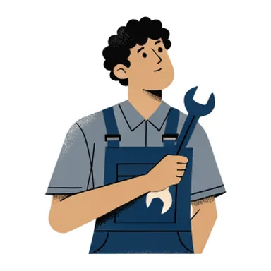
der Auszubildende, die Auszubildenden 직업 교육생
Die Auszubildenden verdienen schon Geld.교육생은 벌써 돈을 벌어요.
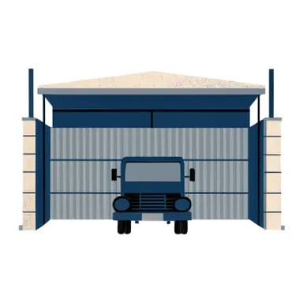
der Betrieb, die Betriebe 회사, 일터
Er arbeitet in einem Betrieb.그 사람은 회사에서 일해요.
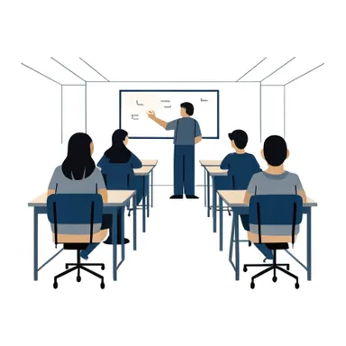
die Berufsschule, die Berufsschulen 직업 학교
Am Montag geht er in die Berufsschule.월요일에 그 사람은 직업 학교에 가요.
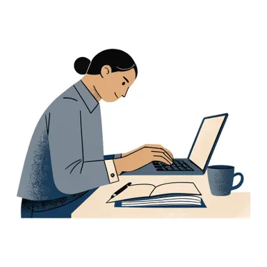
die Weiterbildung, die Weiterbildungen (일하면서 받는) 교육
Ich mache eine Weiterbildung.저는 교육을 받아요.
der Plan, die Pläne 계획
Das ist ein guter Plan.좋은 계획이에요.
vorhaben (du hast vor, hat vorgehabt) ~할 계획이다
Was hast du vor?어떤 계획이 있어요?
versuchen (hat versucht) 해 보다, 애쓰다
Ich versuche, viel Deutsch zu sprechen.저는 독일어를 많이 쓰려고 해요.
schaffen (hat geschafft) 해내다
Das schaffst du!해낼 수 있어요!
Lust haben 하고 싶다
Ich habe Lust, im Café zu arbeiten.저는 카페에서 일해 보고 싶어요.
die Zukunft 앞날, 미래
In Zukunft möchte ich ein Team leiten.앞으로 저는 팀을 이끌고 싶어요.
die Verantwortung 책임
Ich möchte mehr Verantwortung haben.저는 책임이 더 큰 일을 맡고 싶어요.
die Leute 사람들
Viele Leute machen eine Ausbildung.직업 교육을 받는 사람이 많아요.
anders 다른, 다르게
In Korea ist das anders.한국은 달라요.
im Moment 지금은, 요즘
Im Moment lerne ich für die Prüfung.요즘 저는 시험공부를 해요.
aufhören (hat aufgehört) 그만두다, 멈추다
Ich höre um fünf Uhr auf.저는 5시에 일을 마쳐요.
이 과의 낱말로 여덟 문제를 풀어요.
werden은 du와 er, sie, es에서 모양이 바뀌어요.
계획은 이 세 가지 틀로 말할 수 있어요.
규칙
앞으로 할 일이나 일어날 일은 werden과 Infinitiv로 말해요. werden은 주어에 맞게 바꾸고, 다른 동사는 Infinitiv로 문장 끝에 둬요. 약속하거나 앞일을 짐작할 때 많이 써요.
| 주어 | werden |
|---|---|
| ich | werde |
| du | wirst |
| er, sie, es | wird |
| wir | werden |
| ihr | werdet |
| sie, Sie | werden |
주의 때를 나타내는 말이 있으면 지금 모양 그대로 써도 앞으로의 일이 돼요. Morgen schreibe ich die Bewerbung. 다른 동사 없이 werden만 쓰면 '~이 되다'라는 뜻이에요. Es wird jedes Jahr mehr. Ich möchte Lehrerin werden.
규칙을 보고 바로 확인해 보세요.
Du … das bestimmt schaffen. 빈칸에 알맞은 말은 무엇인가요?
규칙
vorhaben, versuchen, anfangen, aufhören, vergessen, hoffen 뒤와 Lust haben, Zeit haben 뒤에 무엇을 하는지 붙일 때는 zu와 Infinitiv를 써요. zu와 Infinitiv는 문장 맨 끝에 오고, 앞에 쉼표를 찍어요.
| 앞 문장 | 가운데 | zu + Infinitiv |
|---|---|---|
| Ich habe vor, | einen Kurs | zu machen. |
| Ich habe Lust, | im Café | zu arbeiten. |
| Ich versuche, | mehr Deutsch | zu sprechen. |
| Es ist wichtig, | pünktlich | zu sein. |
주의 나뉘는 동사는 zu가 가운데로 들어가서 한 낱말이 돼요. anrufen은 anzurufen, einkaufen은 einzukaufen이에요. Vergiss nicht, die Chefin anzurufen. Es ist wichtig, …와 Es ist schön, … 뒤에도 zu를 써요.
규칙을 보고 바로 확인해 보세요.
Ich habe vor, einen Kurs … 빈칸에 알맞은 말은 무엇인가요?
규칙
조동사 können, müssen, wollen, sollen, dürfen, möchten과 werden 뒤에는 zu를 쓰지 않아요. Infinitiv만 문장 끝에 둬요. 그 밖의 동사 뒤에는 zu를 써요.
| zu 없이 | zu와 함께 |
|---|---|
| Ich will arbeiten. | Ich habe vor zu arbeiten. |
| Ich kann kommen. | Ich versuche zu kommen. |
| Ich möchte lernen. | Ich habe Lust zu lernen. |
| Ich werde anrufen. | Ich vergesse nicht anzurufen. |
주의 헷갈리면 이렇게 기억하세요. 조동사와 werden 뒤에는 zu가 없고, 나머지 동사 뒤에는 zu가 있어요. 짧은 문장에서는 쉼표를 빼도 돼요. Ich habe vor zu arbeiten.
규칙을 보고 바로 확인해 보세요.
Sora will wieder als Designerin … 빈칸에 알맞은 말은 무엇인가요?
듣고 알맞은 것을 고르세요.
Jiu의 계획은 무엇인가요?
Ich habe vor, mich im Café zu bewerben.
교육비는 누가 내나요?
Die Firma wird die Weiterbildung bezahlen.
Ausbildung은 대개 얼마나 걸리나요?
Eine Ausbildung dauert meistens drei Jahre.
Dohyun은 무엇을 맡고 있나요?
Ich bin für die Kunden in Süddeutschland zuständig.
카페 사장이 Jiu의 전화에 말을 남겼어요. 듣고 알맞은 것을 고르세요.
Ein Anruf vom Café
Frau Brandt Guten Tag, Frau Kim, hier ist Brandt vom Café Morgenrot.
Frau Brandt Vielen Dank für Ihre Bewerbung. Wir möchten Sie gern zu einem Gespräch einladen.
Frau Brandt Haben Sie am Donnerstag um fünfzehn Uhr Zeit für ein Vorstellungsgespräch?
Frau Brandt Bitte bringen Sie Ihren Ausweis mit, und rufen Sie mich bitte heute noch zurück.
카페는 Jiu에게 무엇을 하자고 하나요?
Wann ist das Gespräch?
Was soll Jiu mitbringen?
카페의 구인 광고예요. 읽고, 맞으면 richtig, 틀리면 falsch를 고르세요.
Aushilfe gesucht (m/w/d)
Das Café Morgenrot sucht ab April eine Aushilfe.
Arbeitszeit: 10 Stunden pro Woche, auch am Wochenende
Ihre Aufgaben: Gäste bedienen, Kaffee machen, aufräumen
Sie sind freundlich, zuverlässig und flexibel. Erfahrung ist nicht nötig.
Sie bekommen 15 Euro pro Stunde und arbeiten in einem netten Team.
Bewerbung mit Lebenslauf bitte per E-Mail an: jobs@example.com
Die Stelle ist ab sofort frei.
4월부터예요.
Man arbeitet zehn Stunden pro Woche.
Für die Stelle braucht man Erfahrung.
Erfahrung ist nicht nötig.
Man verdient fünfzehn Euro pro Stunde.
Die Bewerbung schickt man per Post.
메일로 보내요.
앞으로의 일이에요. werden의 알맞은 모양을 고르세요.
Ich die E-Mail heute Abend schicken.
메일은 오늘 저녁에 보낼게요.
Die Firma den Kurs bezahlen.
과정 비용은 회사가 낼 거예요.
du dich im Café bewerben?
카페에 지원할 거예요?
Wir im Sommer einen neuen Kunden bekommen.
여름에 새 고객이 생길 거예요.
Jiu und Lena den Lebenslauf zusammen schreiben.
Jiu와 Lena는 이력서를 같이 쓸 거예요.
Was ihr nach dem Kurs machen?
여러분은 과정이 끝나면 뭘 할 거예요?
zu가 있어야 할까요? 알맞은 것을 고르세요.
Ich habe vor, im Café .
저는 카페에서 일할 생각이에요.
Ich möchte im Café .
저는 카페에서 일하고 싶어요.
Dohyun versucht, mehr Deutsch .
Dohyun은 독일어를 더 많이 쓰려고 해요.
Sora will wieder als Designerin .
Sora는 다시 디자이너로 일하려고 해요.
Hast du Lust, ins Kino ?
영화 보러 갈 생각 있어요?
Ich werde morgen die Bewerbung .
지원서는 내일 쓸 거예요.
zu의 자리를 보고 알맞은 것을 고르세요.
Vergiss nicht, die Chefin .
사장님께 전화하는 거 잊지 말아요.
Ich habe keine Zeit, heute .
오늘은 장 볼 시간이 없어요.
Es ist wichtig, pünktlich .
시간을 지키는 것이 중요해요.
Ich habe vor, um sechs Uhr .
저는 6시에 일어날 생각이에요.
낱말을 순서대로 눌러 문장을 만드세요.
저는 지원할 생각이에요.
메일은 오늘 저녁에 보낼게요.
카페에서 일해 볼 생각 있어요?
교육비는 회사가 낼 거예요.
저는 날마다 독일어를 쓰려고 해요.
낱말과 알맞은 설명을 짝지으세요.
빈칸에 알맞은 낱말을 쓰세요.
Das Café sucht eine .
카페에서 일할 사람을 찾아요.
Ich habe morgen ein .
내일 면접이 있어요.
Ich bin für die Kunden .
저는 고객을 맡고 있어요.
Eine dauert meistens drei Jahre.
직업 교육은 대개 3년 걸려요.
듣고 그대로 써 보세요.
음성 준비 중Ich möchte mich bewerben. 지원하고 싶어요.
음성 준비 중Ich werde einen Kurs besuchen. 저는 과정에 다닐 거예요.
음성 준비 중Ich habe vor, wieder zu arbeiten. 저는 다시 일할 생각이에요.
Ich arbeite als Ingenieur bei Kessler Technik. 저는 Kessler Technik에서 엔지니어로 일해요.
Ich bin für die Kunden zuständig. 저는 고객을 맡고 있어요.
Ich plane Projekte und schreibe Angebote. 저는 프로젝트를 계획하고 제안서를 써요.
Ich arbeite Vollzeit. 저는 전일제로 일해요.
Ich habe in Seoul studiert. 저는 서울에서 대학을 다녔어요.
Ich habe drei Jahre als Designerin gearbeitet. 저는 3년 동안 디자이너로 일했어요.
Ich habe schon in einem Café gearbeitet. 저는 카페에서 일해 본 적이 있어요.
Seit einem Jahr arbeite ich in Deutschland. 1년 전부터 독일에서 일해요.
Ich habe vor, eine Weiterbildung zu machen. 저는 교육을 받을 생각이에요.
Ich werde im März einen Kurs besuchen. 저는 3월에 과정에 다닐 거예요.
In Zukunft möchte ich ein Team leiten. 앞으로 저는 팀을 이끌고 싶어요.
Ich versuche, jeden Tag Deutsch zu sprechen. 저는 날마다 독일어를 쓰려고 해요.
Ich habe Ihre Anzeige gelesen. 광고를 읽었습니다.
Ich möchte mich um die Stelle bewerben. 그 자리에 지원하고 싶습니다.
Ich bin freundlich und zuverlässig. 저는 친절하고 믿을 수 있는 사람입니다.
Ich kann auch am Wochenende arbeiten. 주말에도 일할 수 있습니다.
Wie viele Stunden pro Woche arbeitet man? 일주일에 몇 시간 일하나요?
Wie viel verdient man pro Stunde? 한 시간에 얼마를 받나요?
Ab wann ist die Stelle frei? 언제부터 일할 수 있나요?
Braucht man Erfahrung? 경험이 있어야 하나요?
과제 고르기
역할 대화와 말하기, 쓰기 과제는 대학 생활과 직장 생활 두 가지예요. 하나를 고르면 다음 과에서도 그쪽 과제가 나와요. 언제든 바꿀 수 있어요.
대화 A에서 역할을 하나 고르세요. 상대의 말은 글로 읽고, 내 차례에는 직접 말해요.
대화 B에서 역할을 하나 고르세요. 상대의 말은 글로 읽고, 내 차례에는 직접 말해요.
올해의 계획을 떠올리고 칸을 채우세요. 완성된 문장을 소리 내어 읽어 보세요.
Ich habe vor, die B1-Prüfung zu machen.
Ich habe Lust, in einem Café zu arbeiten.
Bald werde ich einen Kurs besuchen.
Später möchte ich Ingenieurin werden.
대학 게시판에서 광고를 봤어요. 대학 도서관에서 일할 학생을 찾아요. 일주일에 8시간, 책을 정리하고 안내하는 일이에요. 지원하기 전에 도서관에 전화해요.
나는 프랑크푸르트 대학에서 Informatik을 공부해요. 한국에서 서점에서 1년 일한 적이 있어요. 월요일과 수요일 오후에 일할 수 있고, 5월부터 시작할 수 있어요.
도서관 직원이 물어요. 쪽지를 보고 답하세요. 질문을 듣고 소리 내어 답한 뒤 예시 답과 비교해 보세요.
Universitätsbibliothek, guten Tag. 대학 도서관입니다, 안녕하세요.
Guten Tag, hier ist Minji Choi. Ich habe Ihre Anzeige gelesen und möchte mich um die Stelle bewerben.
Schön. Was studieren Sie? 좋아요. 무엇을 공부하세요?
Ich studiere Informatik an der Universität Frankfurt.
Haben Sie schon Erfahrung? 경험이 있으세요?
Ja. Ich habe in Korea ein Jahr in einer Buchhandlung gearbeitet.
Wann können Sie arbeiten? 언제 일할 수 있으세요?
Ich kann am Montag und am Mittwoch am Nachmittag arbeiten.
Und ab wann können Sie anfangen? 언제부터 시작할 수 있으세요?
Ich kann ab Mai anfangen. Ich werde Ihnen heute noch meinen Lebenslauf schicken.
Eine Bewerbung für den Nebenjob
도서관에 보내는 지원 메일을 써 보세요. 여섯 문장이면 충분해요.
Sehr geehrte Damen und Herren, ich habe Ihre Anzeige an der Universität gelesen und möchte mich um die Stelle in der Bibliothek bewerben. Ich bin 24 Jahre alt und studiere Informatik in Frankfurt. In Korea habe ich ein Jahr in einer Buchhandlung gearbeitet. Ich kann am Montag und am Mittwoch am Nachmittag arbeiten und ab Mai anfangen. Ich habe Lust, in der Bibliothek zu arbeiten, weil ich Bücher mag. Meinen Lebenslauf schicke ich mit. Mit freundlichen Grüßen, Minji Choi
다 쓴 뒤에 확인해 보세요.
팀에 새 동료 Frau Demir가 왔어요. 점심때 Frau Demir가 내가 하는 일과 경력을 물어요.
나는 서울에서 기계 공학(Maschinenbau)을 공부하고 한국 회사에서 5년 일했어요. 1년 전부터 Kessler Technik에서 일하고, 북부 독일의 고객을 맡고 있어요. 올해는 프로젝트 관리 교육을 받을 계획이고, 나중에는 팀을 이끌고 싶어요.
새 동료 Frau Demir가 물어요. 쪽지를 보고 답하세요. 질문을 듣고 소리 내어 답한 뒤 예시 답과 비교해 보세요.
Hallo, ich bin neu hier. Was machen Sie bei Kessler Technik? 안녕하세요, 저는 새로 왔어요. Kessler Technik에서 무슨 일을 하세요?
Ich arbeite als Ingenieurin. Ich bin für die Kunden in Norddeutschland zuständig.
Seit wann arbeiten Sie hier? 여기서 언제부터 일하셨어요?
Seit einem Jahr. Früher habe ich fünf Jahre bei einer Firma in Korea gearbeitet.
Und was haben Sie studiert? 대학에서는 뭘 공부하셨어요?
Ich habe in Seoul Maschinenbau studiert.
Was sind Ihre Aufgaben? 맡은 일은 뭐예요?
Ich plane Projekte, schreibe Angebote und besuche die Kunden.
Haben Sie Pläne für dieses Jahr? 올해 계획이 있으세요?
Ja. Ich habe vor, eine Weiterbildung für Projektleitung zu machen. Später möchte ich ein Team leiten.
Mein Profil
회사 누리집의 직원 소개에 올릴 글을 써 보세요. 여섯 문장이면 충분해요.
Mein Name ist Minji Choi. Ich arbeite seit einem Jahr als Ingenieurin bei Kessler Technik und bin für die Kunden in Norddeutschland zuständig. Ich habe in Seoul Maschinenbau studiert. Früher habe ich fünf Jahre bei einer Firma in Korea gearbeitet. In diesem Jahr habe ich vor, eine Weiterbildung für Projektleitung zu machen. In Zukunft möchte ich ein Team leiten.
다 쓴 뒤에 확인해 보세요.
Ich kann sagen, was ich arbeite und was meine Aufgaben sind.내가 하는 일과 맡은 일을 말할 수 있어요.
Ich kann eine Stellenanzeige verstehen.구인 광고를 이해할 수 있어요.
Ich kann über Pläne sprechen.계획을 말할 수 있어요.
Ich kann mich um einen Job bewerben.일자리에 지원할 수 있어요.